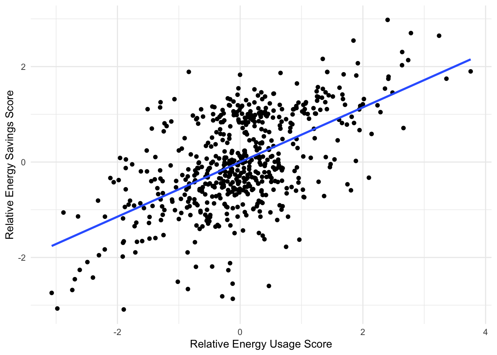

Description: Measures how easy or hard it would be for participants to make various changes related to energy usage. Items are phrased as actions such as buying a fuel-efficient car, or changing light bulbs.
Coding Scheme:
1 = “Do it already”
2 = “Extremely easy”
3 = “Very easy”
4 = “Somewhat easy”
5 = “Neither easy nor hard”
6 = “Somewhat hard”
7 = “Very hard”
8 = “Extremely hard”
9 = “Not applicable”
Specific Items:
ATT01: Buying a more fuel-efficient automobile
ATT02: Carpooling with one other person to work
ATT03: Replacing poorly insulated windows
ATT04: Cutting highway speed
ATT05: More efficient heating unit
ATT06: Turning down the thermostat in the day and night
ATT07: Turning up the thermostat on air conditioner in the summer
ATT08: Tuning up the car twice a year
ATT09: Replacing incandescent bulbs with CFLs
ATT10: Turning up the refrigerator thermostat
ATT11: Turning down the freezer thermostat
ATT12: Drying clothes on a clothes line
ATT13: Watching less TV
ATT14: Installing a more efficient washer
ATT15: Changing washer temperature settings
B. Numeracy Questions (ATT16-ATT18):
Description: Measures numerical literacy through probability questions.
Coding Scheme: Text box entry where participants are asked to enter numeric answers with no other text. Correct answers are below.
Specific Items:
ATT16: Probability of coin flips (correct answer: 500)
ATT17: Probability of winning lottery (correct answer: 10)
ATT18: Percentage of winning car sweepstakes (correct answer: 0.1%)
Display code
analyze_attari_survey_part1<-function(aes_combined){# Correct answers for Numeracy Questions (ATT16-ATT18)correct_numeracy<-c( ATT16 =500, ATT17 =10, ATT18 =0.1)# Function to calculate the relative score for numeracy itemscalculate_relative_score_numeracy<-function(response, correct){if(is.na(response)){return(NA)}elseif(response>correct){1-(response-correct)/response}else{response/correct}}# Calculate perceived difficulty scores (average of ATT01-ATT15, excluding 9)difficulty_scores<-aes_combined%>%select(id, ATT01:ATT15)%>%pivot_longer( cols =ATT01:ATT15, names_to ="item", values_to ="response")%>%filter(response!=9)%>%# Exclude "Not applicable" responsesgroup_by(id)%>%summarize(perceived_difficulty_score =mean(response, na.rm =TRUE))# Calculate numeracy scoresnumeracy_scores<-aes_combined%>%select(id, ATT16:ATT18)%>%pivot_longer( cols =ATT16:ATT18, names_to ="item", values_to ="response")%>%mutate(correct =correct_numeracy[item])%>%mutate(relative_score =map2_dbl(response, correct, calculate_relative_score_numeracy))%>%group_by(id)%>%summarize(numeracy_score =mean(relative_score, na.rm =TRUE))# Combine the scores into a single data framefinal_scores<-full_join(difficulty_scores, numeracy_scores, by ="id")final_scores<-final_scores%>%mutate( perceived_difficulty_score =scale(perceived_difficulty_score), numeracy_score =scale(numeracy_score))return(final_scores)}# Example usage:attari1<-analyze_attari_survey_part1(aes_combined)# histogram of attari_pd_n (1 liner plot)#ggplot(attari1, aes(attari_pd_n)) + geom_histogram(binwidth = 1) cor(attari1$perceived_difficulty_score, attari1$numeracy_score, use="pairwise.complete.obs")
analyze_attari_survey<-function(att2_combined){# Correct answers for Relative Energy Usage (ATT19-ATT27)correct_usage<-c( ATT19 =27, ATT20 =140, ATT21 =48, ATT22 =128, ATT23 =3400, ATT24 =925, ATT25 =1000, ATT26 =3500, ATT27 =3400)# Correct answers for Relative Energy Savings (ATT28-ATT33)correct_savings<-c( ATT28 =1800, ATT29 =25, ATT30 =3400, ATT31 =115, ATT32 =546, ATT33 =4000)# Function to calculate the relative score for each itemcalculate_relative_score<-function(response, correct){if(response>correct){1-(response-correct)/response}else{response/correct}}# Calculate relative energy usage scoresusage_scores<-att2_combined%>%select(id, ATT19:ATT27)%>%pivot_longer( cols =ATT19:ATT27, names_to ="item", values_to ="response")%>%mutate(correct =correct_usage[item])%>%mutate(relative_score =map2_dbl(response, correct, calculate_relative_score))%>%group_by(id)%>%summarize(relative_energy_use_score =mean(relative_score, na.rm =TRUE))# Calculate relative energy savings scoressavings_scores<-att2_combined%>%select(id, ATT28:ATT33)%>%pivot_longer( cols =ATT28:ATT33, names_to ="item", values_to ="response")%>%mutate(correct =correct_savings[item])%>%mutate(relative_score =map2_dbl(response, correct, calculate_relative_score))%>%group_by(id)%>%summarize(relative_energy_save_score =mean(relative_score, na.rm =TRUE))# Combine the scores into a single data framefinal_scores<-full_join(usage_scores, savings_scores, by ="id")# Standardize the scoresfinal_scores<-final_scores%>%mutate( relative_energy_use_score =scale(relative_energy_use_score), relative_energy_save_score =scale(relative_energy_save_score))return(final_scores)}# Example usage with the provided data:attari2_scores<-analyze_attari_survey(att2_combined)cor(attari2_scores$relative_energy_use_score, attari2_scores$relative_energy_save_score, use="pairwise.complete.obs")
[,1]
[1,] 0.57
Display code
ggplot(attari2_scores, aes(x =relative_energy_use_score, y =relative_energy_save_score))+geom_point()+geom_smooth(method ="lm", se =FALSE)+labs(x ="Relative Energy Usage Score", y ="Relative Energy Savings Score")+theme_minimal()

Display code
head(attari2_scores)|>pander::pandoc.table(caption="Attari Part 2",split.table=Inf,style='rmarkdown')
Description: Assesses participants’ knowledge of energy concepts.
Coding Scheme: Multiple-choice questions.
Specific Items:
ELS01: Units of electrical energy (correct answer: 2 = “Kilowatt-hours (kWh)”)
ELS02: Energy consumption of appliance (correct answer: 3 = “Multiplied by the time it’s used”)
ELS03: Energy conversion in incandescent bulb (correct answer: 3 = “Electrical energy to radiant energy (light) and thermal energy (heat)”)
ELS04: Best reason to buy an Energy Star appliance (correct answer: 3 = “ENERGY STAR appliances use less energy”)
ELS05: Most energy used in average American home (correct answer: 3 = “Heating and cooling rooms”)
ELS06: Most electricity used in average home (correct answer: 2 = “Refrigerator”)
ELS07: Source of most electricity in the US (correct answer: 3 = “Burning coal”)
ELS08: Problem with switching to electric cars (correct answer: 1 = “Most electricity is currently produced from fossil fuels (coal, oil, natural gas)”)
Display code
analyze_els_survey<-function(els){# Correct answers for ELS items (ELS01-ELS08)correct_answers<-c( ELS01 =2, ELS02 =3, ELS03 =3, ELS04 =3, ELS05 =3, ELS06 =2, ELS07 =3, ELS08 =1)els%>%mutate( accuracy =rowSums(across(ELS01:ELS08, ~.x==correct_answers[cur_column()])), els =as.numeric(scale(accuracy)))%>%select(id, accuracy, els)}# Example usage:els_scores<-analyze_els_survey(els)els_scores|>head()|>pander::pandoc.table(caption="Energy Literacy Scores",split.table=Inf,style='rmarkdown')
Description: These are questions included from a different study
Coding Scheme: 5-point agreement scale
Specific Items:
RS01: I generally don’t pay attention to how much energy I use.
RS02: I would say I am very pro-environmental.
RS03: I think saving energy is largely a waste of time.
RS04: I am generally conservative on the political spectrum with regard to social issues.
RS05: I am generally conservative on the political spectrum with regard to economic issues.
RS06: I consider myself knowledgeable about how much energy utilities use
head(rs,n=10) # A tibble: 10 × 7 id RS01 RS02 RS03 RS04 RS05 RS06 <dbl+lbl> <dbl+lbl> <dbl+lbl> <dbl+lbl> <dbl+lbl> <dbl+l> 1 1 2 [Somewhat Agree] 2 [Somewhat Agree] 5 [Disagree] 4 [Somewhat Disagree] 4 [Somewhat Disagree] 4 [Som… 2 2 5 [Disagree] 3 [Neither agree nor disagree] 3 [Neither agree nor disagree] 5 [Disagree] 5 [Disagree] 3 [Nei… 3 3 3 [Neither agree nor disagree] 3 [Neither agree nor disagree] 3 [Neither agree nor disagree] 3 [Neither agree nor disagree] 3 [Neither agree nor di… 3 [Nei…
Display code
analyze_recycling_survey<-function(rs_data){# 1) Coerce columns to numericrs_numeric<-rs_data%>%mutate( RS01_num =as.numeric(as.character(RS01)), RS02_num =as.numeric(as.character(RS02)), RS03_num =as.numeric(as.character(RS03)), RS04_num =as.numeric(as.character(RS04)), RS05_num =as.numeric(as.character(RS05)), RS06_num =as.numeric(as.character(RS06)))# 2) Recode items so that higher numbers consistently reflect# "more" of the targeted construct:## Environmental Attitude (RS01 & RS03 are negative, RS02 & RS06 are positive).# Original scale is 1=Agree ... 5=Disagree# For a 'positive' pro-environment item, do 6 - x => so 1 => 5 (strong agreement => higher = pro-env).# For a 'negative' pro-environment item, keep x => so 1 => 1 (strong agreement => lower pro-env).rs_recode<-rs_numeric%>%mutate(# Positive items RS02_env =6-RS02_num, # now 5 = strongly pro-env RS06_env =6-RS06_num, # now 5 = strongly pro-env# Negative items (keep the original so that 1 => 1 = strongly anti-env, 5 => 5 = strongly pro-env) RS01_env =RS01_num, RS03_env =RS03_num,# Political items: If we want higher = more conservative,# we can do 6 - x so that 1 => 5 (strongly conservative).# If you'd prefer the raw code to remain 1=Agree => "lowest" numeric,# skip the transformation. Below we invert it: RS04_cons =6-RS04_num, RS05_cons =6-RS05_num)# 3) Compute subscales# - "env_attitude": average of RS01_env, RS02_env, RS03_env, RS06_env# such that 5 = most pro-environment, 1 = least pro-environment# - "pol_conservatism": average of RS04_cons, RS05_cons# such that 5 = strongly conservative, 1 = strongly liberalrs_subscales<-rs_recode%>%rowwise()%>%mutate( env_attitude =mean(c(RS01_env, RS02_env, RS03_env, RS06_env), na.rm =TRUE), pol_conservatism =mean(c(RS04_cons, RS05_cons), na.rm =TRUE))%>%ungroup()# 4) Standardize subscales if desiredrs_final<-rs_subscales%>%mutate( env_attitude_z =as.numeric(scale(env_attitude)), pol_conservatism_z =as.numeric(scale(pol_conservatism)))%>%# 5) Return the columns of interestselect(id, env_attitude, env_attitude_z,pol_conservatism, pol_conservatism_z)return(rs_final)}rs_scores<-analyze_recycling_survey(rs)head(rs_scores)|>pander::pandoc.table(caption ="Recycling Study Scores",split.table=Inf,style='rmarkdown')
---title: "Instrument Analyses"execute: echo: true warning: falseformat: html: grid: sidebar-width: 220px body-width: 1200px margin-width: 170px gutter-width: 1.0rem hugo-md: include: true html-math-method: mathjax output-file: inst_hugo.md gfm: echo: true output-file: inst_gfm.md---## Survey Instrument Categorizations| Survey | Scale/Description | Categorization | Starting Item | Ending Item | # of Items | Operationalization || :------------------------------------------| :------------------------------------------| :------------------------------------------------------| :------------| :----------| :---------| :-----------------------|| Energy Literacy Survey | Energy Literacy Survey | Knowledge | ELS01 | ELS08 | 8 | Multiple choice || Attari Energy Survey - Part 1 | Numeracy Questions | Knowledge | ATT16 | ATT18 | 3 | Specific numeric answers || Attari Energy Survey - Part 2 | Relative Energy Usage | Knowledge | ATT19 | ATT33 | 15 | Specific numeric answers || Attari Energy Survey - Part 1 | Perceived Difficulty items | Motivation | ATT01 | ATT15 | 15 | "Do it already" || Recycling Study | NA | Motivation - Attitudes on environment,Politics | RS01 | RS06 | 6 | "Agree" |```{r}pacman::p_load(dplyr,purrr,tidyr,here, haven,tibble,ggplot2,ggh4x,lme4,knitr,kableExtra,gt,pander,flextable,ggh4x,psych,corrplot)options(digits=2, scipen=999, dplyr.summarise.inform=FALSE)draw <-readRDS(here("data","draw.rds"))dinst <-readRDS(here("data","dinst.rds"))# Attari Energy Survey (Part 1)aes1 <- draw |>select(id,ATT01:ATT18)aes2 <- dinst |>select(id,ATT01:ATT18)aes_combined <-bind_rows(aes1, aes2)att_useSave <- draw |>select(id,ATT19:ATT33)att_useSave2 <- dinst |>select(id,ATT19:ATT33)att2_combined <-bind_rows(att_useSave, att_useSave2)els1 <- draw |>select(id,ELS01:ELS08)els2 <- dinst |>select(id,ELS01:ELS08)els <-bind_rows(els1,els2)rs1 <- draw |>select(id,RS01:RS06)rs2 <- dinst |>select(id,RS01:RS06)rs <-bind_rows(rs1,rs2)```# Attari Energy Survey (Part 1)* **A. Perceived Difficulty Items (ATT01-ATT15):** * **Description:** Measures how easy or hard it would be for participants to make various changes related to energy usage. Items are phrased as actions such as buying a fuel-efficient car, or changing light bulbs. * **Coding Scheme:** * 1 = "Do it already" * 2 = "Extremely easy" * 3 = "Very easy" * 4 = "Somewhat easy" * 5 = "Neither easy nor hard" * 6 = "Somewhat hard" * 7 = "Very hard" * 8 = "Extremely hard" * 9 = "Not applicable" * **Specific Items:** * ATT01: Buying a more fuel-efficient automobile * ATT02: Carpooling with one other person to work * ATT03: Replacing poorly insulated windows * ATT04: Cutting highway speed * ATT05: More efficient heating unit * ATT06: Turning down the thermostat in the day and night * ATT07: Turning up the thermostat on air conditioner in the summer * ATT08: Tuning up the car twice a year * ATT09: Replacing incandescent bulbs with CFLs * ATT10: Turning up the refrigerator thermostat * ATT11: Turning down the freezer thermostat * ATT12: Drying clothes on a clothes line * ATT13: Watching less TV * ATT14: Installing a more efficient washer * ATT15: Changing washer temperature settings* **B. Numeracy Questions (ATT16-ATT18):** * **Description:** Measures numerical literacy through probability questions. * **Coding Scheme:** Text box entry where participants are asked to enter numeric answers with no other text. Correct answers are below. * **Specific Items:** * ATT16: Probability of coin flips (correct answer: 500) * ATT17: Probability of winning lottery (correct answer: 10) * ATT18: Percentage of winning car sweepstakes (correct answer: 0.1%)```{r}analyze_attari_survey_part1 <-function(aes_combined) {# Correct answers for Numeracy Questions (ATT16-ATT18) correct_numeracy <-c(ATT16 =500, ATT17 =10, ATT18 =0.1 )# Function to calculate the relative score for numeracy items calculate_relative_score_numeracy <-function(response, correct) {if (is.na(response)) {return(NA) } elseif (response > correct) {1- (response - correct) / response } else { response / correct } }# Calculate perceived difficulty scores (average of ATT01-ATT15, excluding 9) difficulty_scores <- aes_combined %>%select(id, ATT01:ATT15) %>%pivot_longer(cols = ATT01:ATT15,names_to ="item",values_to ="response" ) %>%filter(response !=9) %>%# Exclude "Not applicable" responsesgroup_by(id) %>%summarize(perceived_difficulty_score =mean(response, na.rm =TRUE))# Calculate numeracy scores numeracy_scores <- aes_combined %>%select(id, ATT16:ATT18) %>%pivot_longer(cols = ATT16:ATT18,names_to ="item",values_to ="response" ) %>%mutate(correct = correct_numeracy[item]) %>%mutate(relative_score =map2_dbl(response, correct, calculate_relative_score_numeracy)) %>%group_by(id) %>%summarize(numeracy_score =mean(relative_score, na.rm =TRUE))# Combine the scores into a single data frame final_scores <-full_join(difficulty_scores, numeracy_scores, by ="id") final_scores <- final_scores %>%mutate(perceived_difficulty_score =scale(perceived_difficulty_score),numeracy_score =scale(numeracy_score) )return(final_scores)}# Example usage:attari1 <-analyze_attari_survey_part1(aes_combined)# histogram of attari_pd_n (1 liner plot)#ggplot(attari1, aes(attari_pd_n)) + geom_histogram(binwidth = 1) cor(attari1$perceived_difficulty_score, attari1$numeracy_score, use="pairwise.complete.obs")attari1|>head() |> pander::pandoc.table(caption="Attari Part 1")```# Attari Energy Survey (Part 2)* **A. Relative Energy Usage (ATT19-ATT27):** * **Description:** Asks participants to estimate the relative energy usage of various devices compared to a 100-Watt bulb. * **Coding Scheme:** Numeric entry. Correct answers are indicated in codebook but these can be any response between 0-200. * **Specific Items:** * ATT19: Compact fluorescent light bulb (correct answer: 27) * ATT20: Desktop computer (correct answer: 140) * ATT21: Laptop computer (correct answer: 48) * ATT22: Stereo (correct answer: 128) * ATT23: Electric clothing dryer (correct answer: 3400) * ATT24: Portable heater (correct answer: 925) * ATT25: Air conditioning unit for a room (correct answer: 1000) * ATT26: Central air conditioning unit (correct answer: 3500) * ATT27: Dishwasher (correct answer: 3400)* **B. Relative Energy Savings (ATT28-ATT33):** * **Description:** Asks participants to estimate the relative energy savings of various actions compared to turning off a 100-Watt bulb. * **Coding Scheme:** Numeric entry. Correct answers are indicated in codebook but these can be any response between 0-200. * **Specific Items:** * ATT28: Replacing 100-Watt bulb with CFL (correct answer: 1800) * ATT29: Replacing 100-watt kitchen bulb with 75-watt bulb (correct answer: 25) * ATT30: Drying clothes on a clothesline (correct answer: 3400) * ATT31: Raising summer air conditioner by 5 F (correct answer: 115) * ATT32: Lowering winter heater by 5 F (correct answer: 546) * ATT33: Changing washer temp settings (correct answer: 4000)```{r}analyze_attari_survey <-function(att2_combined) {# Correct answers for Relative Energy Usage (ATT19-ATT27) correct_usage <-c(ATT19 =27, ATT20 =140, ATT21 =48, ATT22 =128, ATT23 =3400,ATT24 =925, ATT25 =1000, ATT26 =3500, ATT27 =3400 )# Correct answers for Relative Energy Savings (ATT28-ATT33) correct_savings <-c(ATT28 =1800, ATT29 =25, ATT30 =3400, ATT31 =115, ATT32 =546, ATT33 =4000 )# Function to calculate the relative score for each item calculate_relative_score <-function(response, correct) {if (response > correct) {1- (response - correct) / response } else { response / correct } }# Calculate relative energy usage scores usage_scores <- att2_combined %>%select(id, ATT19:ATT27) %>%pivot_longer(cols = ATT19:ATT27,names_to ="item",values_to ="response" ) %>%mutate(correct = correct_usage[item]) %>%mutate(relative_score =map2_dbl(response, correct, calculate_relative_score)) %>%group_by(id) %>%summarize(relative_energy_use_score =mean(relative_score, na.rm =TRUE))# Calculate relative energy savings scores savings_scores <- att2_combined %>%select(id, ATT28:ATT33) %>%pivot_longer(cols = ATT28:ATT33,names_to ="item",values_to ="response" ) %>%mutate(correct = correct_savings[item]) %>%mutate(relative_score =map2_dbl(response, correct, calculate_relative_score)) %>%group_by(id) %>%summarize(relative_energy_save_score =mean(relative_score, na.rm =TRUE))# Combine the scores into a single data frame final_scores <-full_join(usage_scores, savings_scores, by ="id")# Standardize the scores final_scores <- final_scores %>%mutate(relative_energy_use_score =scale(relative_energy_use_score),relative_energy_save_score =scale(relative_energy_save_score) )return(final_scores)}# Example usage with the provided data:attari2_scores <-analyze_attari_survey(att2_combined)cor(attari2_scores$relative_energy_use_score, attari2_scores$relative_energy_save_score, use="pairwise.complete.obs")ggplot(attari2_scores, aes(x = relative_energy_use_score, y = relative_energy_save_score)) +geom_point() +geom_smooth(method ="lm", se =FALSE) +labs(x ="Relative Energy Usage Score", y ="Relative Energy Savings Score") +theme_minimal()head(attari2_scores) |> pander::pandoc.table(caption="Attari Part 2",split.table=Inf,style='rmarkdown')```# Energy Literacy Survey (ELS01-ELS08)* **Description:** Assesses participants' knowledge of energy concepts.* **Coding Scheme:** Multiple-choice questions.* **Specific Items:** * ELS01: Units of electrical energy (correct answer: 2 = "Kilowatt-hours (kWh)") * ELS02: Energy consumption of appliance (correct answer: 3 = "Multiplied by the time it's used") * ELS03: Energy conversion in incandescent bulb (correct answer: 3 = "Electrical energy to radiant energy (light) and thermal energy (heat)") * ELS04: Best reason to buy an Energy Star appliance (correct answer: 3 = "ENERGY STAR appliances use less energy") * ELS05: Most energy used in average American home (correct answer: 3 = "Heating and cooling rooms") * ELS06: Most electricity used in average home (correct answer: 2 = "Refrigerator") * ELS07: Source of most electricity in the US (correct answer: 3 = "Burning coal") * ELS08: Problem with switching to electric cars (correct answer: 1 = "Most electricity is currently produced from fossil fuels (coal, oil, natural gas)")```{r}analyze_els_survey <-function(els) {# Correct answers for ELS items (ELS01-ELS08) correct_answers <-c(ELS01 =2, ELS02 =3, ELS03 =3, ELS04 =3,ELS05 =3, ELS06 =2, ELS07 =3, ELS08 =1 ) els %>%mutate(accuracy =rowSums(across(ELS01:ELS08, ~ .x == correct_answers[cur_column()])),els =as.numeric(scale(accuracy)) ) %>%select(id, accuracy, els)}# Example usage:els_scores <-analyze_els_survey(els)els_scores |>head() |> pander::pandoc.table(caption="Energy Literacy Scores",split.table=Inf,style='rmarkdown')```# Recycling Study Questions RS01-RS06* **Description:** These are questions included from a different study * **Coding Scheme:** 5-point agreement scale * **Specific Items:** * RS01: I generally don’t pay attention to how much energy I use. * RS02: I would say I am very pro-environmental. * RS03: I think saving energy is largely a waste of time. * RS04: I am generally conservative on the political spectrum with regard to social issues. * RS05: I am generally conservative on the political spectrum with regard to economic issues. * RS06: I consider myself knowledgeable about how much energy utilities usehead(rs,n=10)# A tibble: 10 × 7 id RS01 RS02 RS03 RS04 RS05 RS06 <int> <dbl+lbl> <dbl+lbl> <dbl+lbl> <dbl+lbl> <dbl+lbl> <dbl+l> 1 1 2 [Somewhat Agree] 2 [Somewhat Agree] 5 [Disagree] 4 [Somewhat Disagree] 4 [Somewhat Disagree] 4 [Som… 2 2 5 [Disagree] 3 [Neither agree nor disagree] 3 [Neither agree nor disagree] 5 [Disagree] 5 [Disagree] 3 [Nei… 3 3 3 [Neither agree nor disagree] 3 [Neither agree nor disagree] 3 [Neither agree nor disagree] 3 [Neither agree nor disagree] 3 [Neither agree nor di… 3 [Nei…```{r}analyze_recycling_survey <-function(rs_data) {# 1) Coerce columns to numeric rs_numeric <- rs_data %>%mutate(RS01_num =as.numeric(as.character(RS01)),RS02_num =as.numeric(as.character(RS02)),RS03_num =as.numeric(as.character(RS03)),RS04_num =as.numeric(as.character(RS04)),RS05_num =as.numeric(as.character(RS05)),RS06_num =as.numeric(as.character(RS06)) )# 2) Recode items so that higher numbers consistently reflect# "more" of the targeted construct:## Environmental Attitude (RS01 & RS03 are negative, RS02 & RS06 are positive).# Original scale is 1=Agree ... 5=Disagree# For a 'positive' pro-environment item, do 6 - x => so 1 => 5 (strong agreement => higher = pro-env).# For a 'negative' pro-environment item, keep x => so 1 => 1 (strong agreement => lower pro-env). rs_recode <- rs_numeric %>%mutate(# Positive itemsRS02_env =6- RS02_num, # now 5 = strongly pro-envRS06_env =6- RS06_num, # now 5 = strongly pro-env# Negative items (keep the original so that 1 => 1 = strongly anti-env, 5 => 5 = strongly pro-env)RS01_env = RS01_num,RS03_env = RS03_num,# Political items: If we want higher = more conservative,# we can do 6 - x so that 1 => 5 (strongly conservative).# If you'd prefer the raw code to remain 1=Agree => "lowest" numeric,# skip the transformation. Below we invert it:RS04_cons =6- RS04_num, RS05_cons =6- RS05_num )# 3) Compute subscales# - "env_attitude": average of RS01_env, RS02_env, RS03_env, RS06_env# such that 5 = most pro-environment, 1 = least pro-environment# - "pol_conservatism": average of RS04_cons, RS05_cons# such that 5 = strongly conservative, 1 = strongly liberal rs_subscales <- rs_recode %>%rowwise() %>%mutate(env_attitude =mean(c(RS01_env, RS02_env, RS03_env, RS06_env), na.rm =TRUE),pol_conservatism =mean(c(RS04_cons, RS05_cons), na.rm =TRUE) ) %>%ungroup()# 4) Standardize subscales if desired rs_final <- rs_subscales %>%mutate(env_attitude_z =as.numeric(scale(env_attitude)),pol_conservatism_z =as.numeric(scale(pol_conservatism)) ) %>%# 5) Return the columns of interestselect(id, env_attitude, env_attitude_z, pol_conservatism, pol_conservatism_z)return(rs_final)}rs_scores <-analyze_recycling_survey(rs)head(rs_scores) |> pander::pandoc.table(caption ="Recycling Study Scores",split.table=Inf,style='rmarkdown')``````{r}```